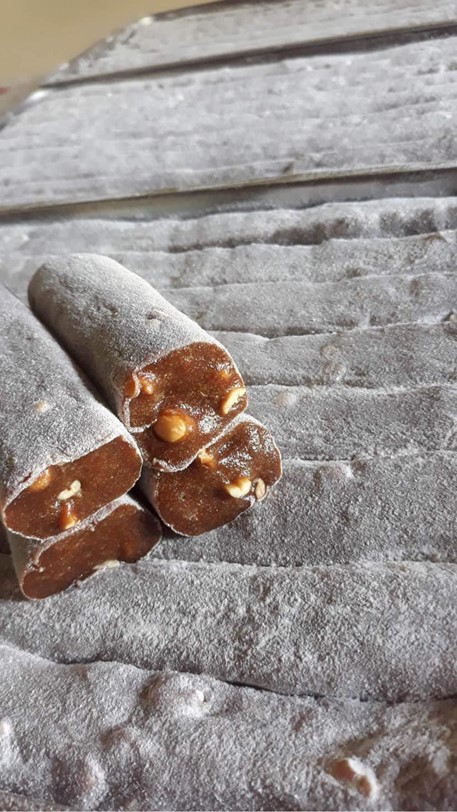

Bánh chè lam
Việc lựa chọn nguyên liệu làm chè lam có vai trò rất quan trọng, bột nếp rang, lạc rang, gừng và mạch nha là những nguyên liệu thân thuộc, dễ kiếm. Đối với gạo để làm bánh phải là gạo nếp nương hạt to, tròn đều. Về phần mật, người làm cần chọn loại màu vàng óng, có độ ngọt lịm mùi mía thơm dịu, không có vị chua. Gừng để nguyên vỏ mới giữ được đầy đủ dược tính nên rửa sạch đất bám, để ráo nước và xay nhỏ. Lạc và vừng rang vàng dậy mùi thơm đặc trưng, bỏ sạch vỏ rồi tán nhỏ.
Khâu chế biến là quá trình rất công phu, tỉ mỉ và người nấu chè phải kiên nhẫn. Gạo nếp sau khi chọn lọc kỹ lưỡng sẽ được cho vào chảo rang, quá trình này đòi hỏi người rang gạo phải có kinh nghiệm trong việc “canh lửa”, trước đây khi rang bếp củi, lửa không được to quá, tay luôn đảo đều để gạo nếp chín vàng đều, không bị sượng. Sau khi rang gạo nếp xong, để nguội và dùng cối xay nhuyễn để tạo thành thứ bột mịn, thơm dậy mùi nếp rang.
Tiếp theo là khâu thắng mật, khâu này đòi hỏi người làm chè lam phải có kinh nghiệm qua thời gian, đổ 2/3 nồi nước lạnh đun sôi rồi bỏ mật vào nồi đun to lửa, bao giờ mật và nước trong nồi sánh lại, độ ngọt vừa phải, lấy đũa đảo mật rồi nhấc lên, cảm quan bằng đôi mắt “nhà nghề” nếu thấy mật kết dính nêm ngọt vừa phải rồi bỏ gừng và lạc vào quấy đều, tiếp tục kết hợp bột gạo nếp đã xay nhuyễn vào, vừa đổ vừa đảo đều tay, lửa nhỏ để bột không bị dính và bị cháy.
Sau khi bột chín, cho bột ra mâm để nhào, rắc bột nếp đã rang vàng lên mâm làm lớp áo cho bánh cũng như để chống dính, sau đó nhanh tay cán hỗn hợp đã nấu trên lớp bột nếp này nhiều lần cho đến khi bánh dẻo, có độ dai. Bánh chè lam ngon là sự kết hợp hài hòa của các nguyên liệu, độ dính của mật, độ mịn của bột, điều đó đòi hỏi sự kỹ lưỡng, tay nghề của người làm bánh.

Bánh chè lam chứa đựng hương vị của đất trời mỗi nơi, đó là vị dẻo thơm của bột nếp nương, vị ngọt của mật, một chút cay nồng của gừng, một chút bùi ngậy của lạc. Tất cả đem đến cho chiếc bánh một hương vị nồng nàn đến khó quên. Hiện nay, tùy theo nhu cầu của khách hàng mà chè lam được chế biến đa dạng hơn như: chè lam truyền thống, chè lam gấc… hay vị ngọt nhẹ, ngọt đậm tùy khẩu vị của từng người.